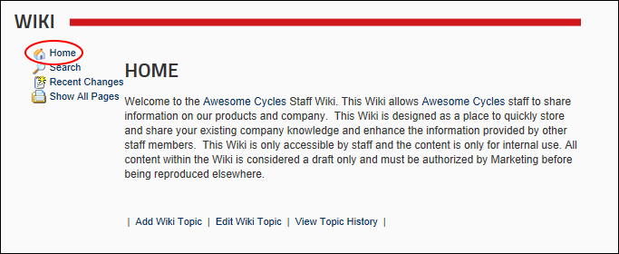
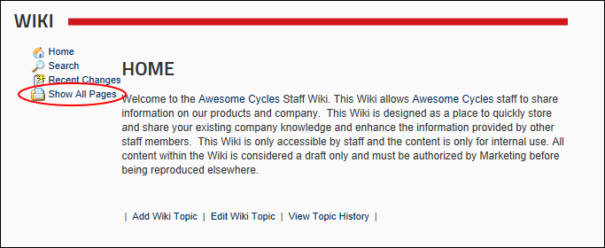
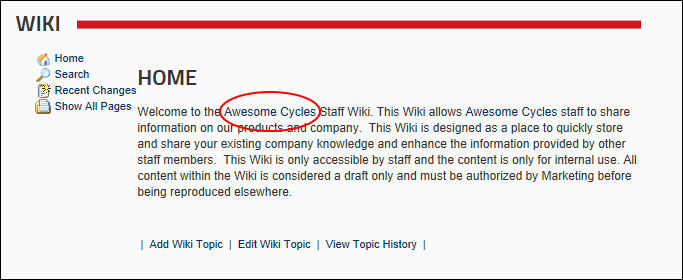

Navigating the Wiki
How to navigate to all pages and locate topics within the Wiki module.
Viewing Wiki Home Page
- Click the Home link.

Viewing all Wiki Pages
- Click the Show All Pages link to display links to all Wiki pages. Click on a link to visit that page.

Navigating the Wiki Module
Locating Wiki Topics without Pages
- Navigate to the page which has a link to the topic.
- Click on the linked Topic Name.

Navigating to the "Awesome Cycles" Wiki page